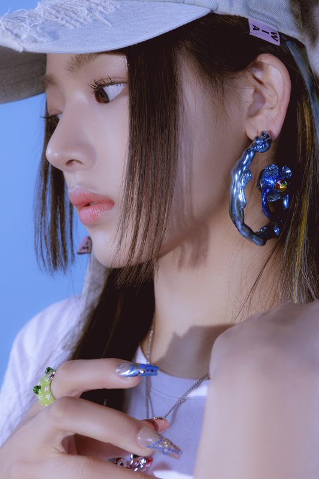
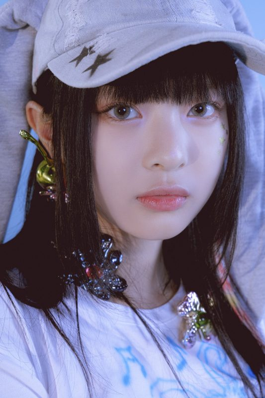
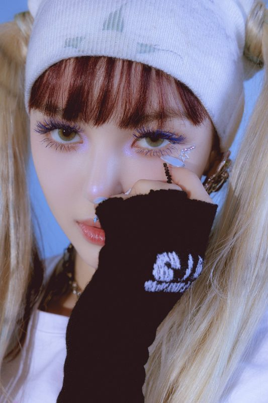
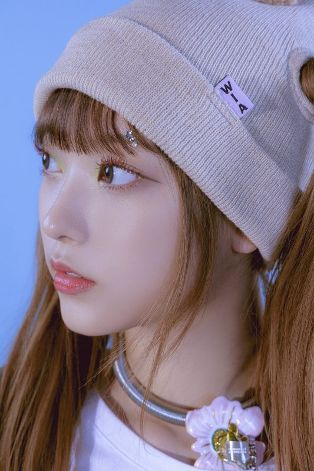
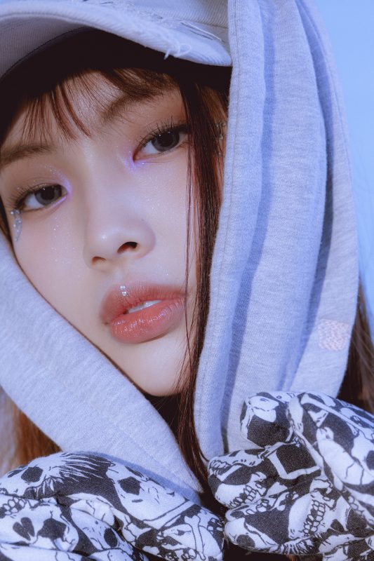

MINJI
Stage Name: Minji (민지)
Birth Name: Kim Minji (김민지)
Birthday: May 07, 2004
Zodiac Sign: Taurus
Chinese Zodiac Sign: Monkey
Height: 169 cm (5’6”)
Blood Type: A
MBTI Type: ESTJ-T
Nationality: Korean
Representative Emoji: 🐻
Minji Facts:
– She was born in Chuncheon, Gangwon, South Korea.
– She has a older brother and a younger sister.
– She is a former Source Music trainee.
– Minji joined Source Music during her second year of middle school.
– She was the face of the Plus Global Auditions in 2019.

HANNI
Stage Name: Hanni (하니)
Birth Name: Phạm Ngọc Hân / Hanni Pham
Birthday: October 6, 2004
Zodiac Sign: Libra
Chinese Zodiac Sign: Monkey
Height: 161.7 cm (5’3”)
Blood Type: O
MBTI Type: INFP
Nationality: Vietnamese-Australian
Representative Emoji: 🐰
Hanni Facts:
– She was born in Melbourne, Victoria, Australia.
– She has a younger sister named Jasmine (born in 2007).
– Her favorite foods are bread, meat, and everything.
– Hanni can speak Vietnamese, English, and Korean.
— Hanni is a Brand Ambassador for Gucci Cosmogonie

DANIELLE
Stage Name: Danielle (다니엘)
Birth Name: Danielle Marsh / Mo Jihye (모지혜)
Birthday: April 11, 2005
Zodiac Sign: Aries
Chinese Zodiac Sign: Rooster
Height: 165 cm (5’5″)
Blood Type: AB
MBTI Type: ENFP
Nationality: Korean-Australian
Representative Emoji: 🐶
Danielle Facts:
– Danielle was born in Munsan, Paju, Gyeonggi-do, South Korea.
– Her father is Australian and her mother is Korean.
– She has an older sister, born in 2000.
– She can speak English and Korean.
– Danielle appeared on tvN’s 다시보는 리얼키즈스토리레인보우 in 2011.

HAERIN
Stage Name: Haerin (해린)
Birth Name: Kang Haerin (강해린)
Birthday: May 15, 2006
Zodiac Sign: Taurus
Chinese Zodiac Sign: Dog
Height: 164.5 cm (5’5”)
Blood Type: B
MBTI Type: ISTP
Nationality: Korean
Representative Emoji: 🐹
Haerin Facts:
– Haerin was born in Pyeongchon, Dongan-gu, Anyang, Gyeonggi-do, South Korea.
– She has a younger sister, born in 2009.
– She can speak English and Korean.
– Haerin used to play pansori, and was nicknamed the voice fairy.
– Her favorite food is Korean food, raw fish, and nuts, but she really just likes eating everything.
